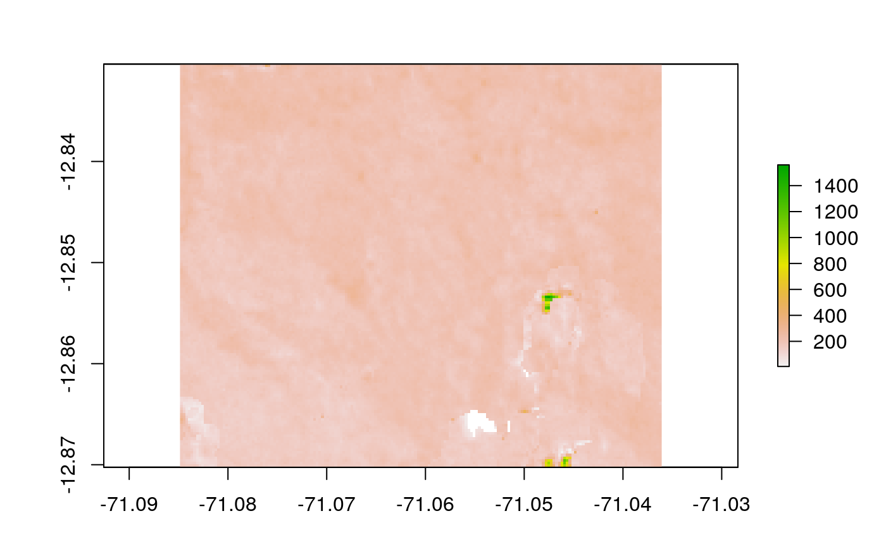
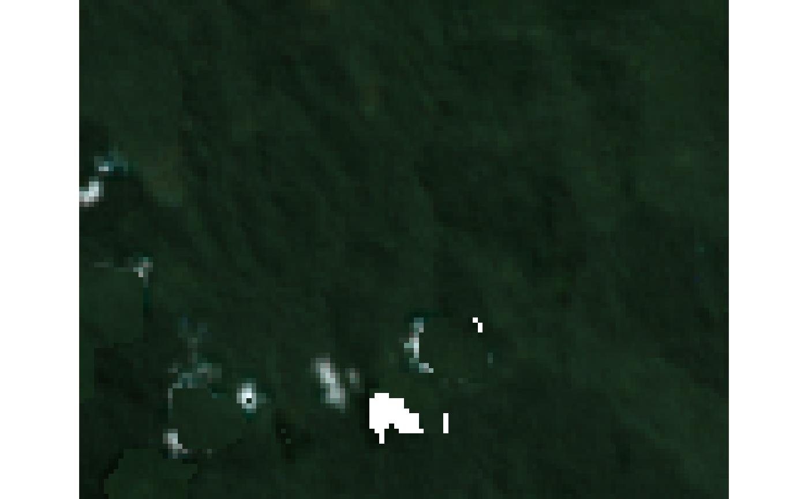

mosaic-free-cloud.RdA three-step algorithm for creating a mosaic from satellite imagery (see notes).
MosaicFreeCloud(img, time, CLUSTER = NULL, fit_negative = TRUE, RasterLayer = TRUE, ...) # S3 method for character MosaicFreeCloud(img, time, CLUSTER = NULL, fit_negative = TRUE, RasterLayer = TRUE, ...) # S3 method for RasterStack MosaicFreeCloud(img, time, CLUSTER = NULL, fit_negative = TRUE, RasterLayer = TRUE, ...) # S3 method for RasterBrick MosaicFreeCloud(img, time, CLUSTER = NULL, fit_negative = TRUE, RasterLayer = TRUE, ...) # S3 method for stars MosaicFreeCloud(img, time, CLUSTER = NULL, fit_negative = TRUE, RasterLayer = TRUE, ...)
| img | Character vector, RasterStack, RasterBrick or 3D/4D star object. |
|---|---|
| time | Date or character vector with the dates of the files. |
| CLUSTER | cluster to use for parallel apply; see makeCluster. |
| fit_negative | logical; if |
| RasterLayer | logical; if |
| ... | Passed on to read_stars parameters. |
The three steps are:
Chooses the image less affected by atmospheric noise.
Calculate the time gap between the image selected in step one to the remaining images.
Take the clean pixels considering the shortest time gap and ending with the image most temporally distant.
Tarazona, Y., Mantas, V.M., Pereira, A.J.S.C. (2018). Improving tropical deforestation detection through using photosynthetic vegetation time series – (PVts-b). Ecological Indicators, 94, 367 379.
library(ForesToolboxRS) library(raster) library(stars) time <- as.Date(c("2016-07-30","2016-08-15","2016-09-16")) rasterio = list(nXOff = 50, nYOff = 50, bands = c(4,3,2)) ## Create a mosaic using three landsat images (just one band) img <- system.file("simple_mosaic", package="ForesToolboxRS") %>% list.files("\\.tif$",full.names = TRUE) free_img <- MosaicFreeCloud(img,time) plot(free_img)## Create a mosaic using three landsat images (all the bands) img <- system.file("mosaic", package="ForesToolboxRS") %>% list.files("\\.tif$",full.names = TRUE) free_img <- MosaicFreeCloud(img,time,RasterIO=rasterio) plotRGB(free_img,3,2,1)# Recommend way to use MosaicFreeCloud if (FALSE) { img <- system.file("mosaic", package="ForesToolboxRS") %>% list.files("\\.tif$",full.names = TRUE) %>% read_stars(img,RasterIO=rasterio) %>% merge CLUSTER = parallel::makeCluster(spec = 4) mosaic <- MosaicFreeCloud(img, time,CLUSTER = CLUSTER) plotRGB(free_img,3,2,1) }